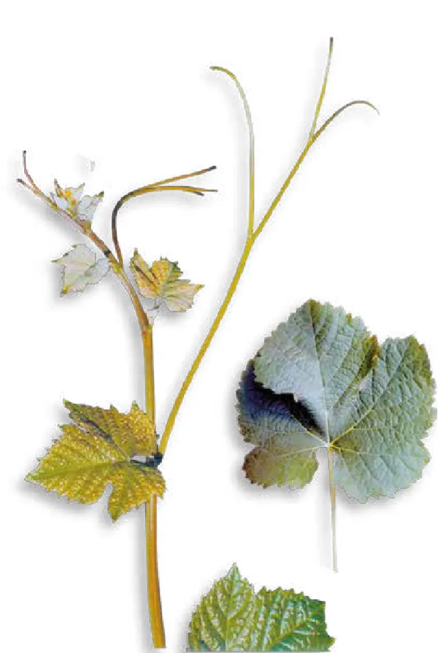
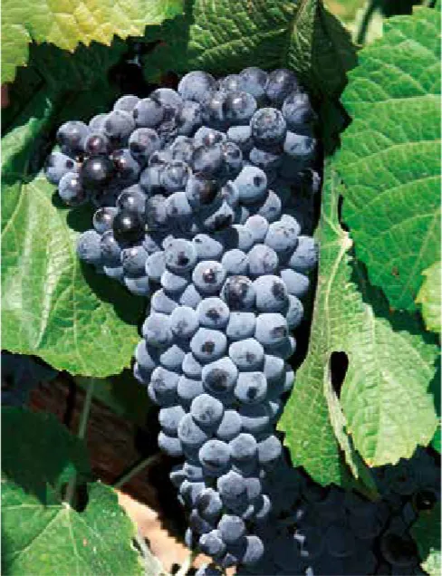

Kapitel 3 · Die portugiesischen Rebsorten
Touriga Franca (R)
Herkunft:
Nordportugal, Kreuzung von Marufo mit Touriga Nacional. Der Name Touriga Francesa entstand in den 1940er-Jahren, hat nach Truel (1983/84) aber nichts mit einer französischen Rebsorte zu tun. Der heutige Name stammt aus der amtlichen Rebsortenliste, veröffentlicht im Ministerialerlass 428/2000. Im ganzen Land angebaut. Region der größten Verbreitung: Douro. Sie ist dort die beliebteste Rebsorte.
Weinbeschreibung:
Das Aroma ist im Allgemeinen intensiv, mit deutlich blumiger Note von Rosen und nur in guten Jahren mit fruchtigem Aroma von Zistrose. Ein Wein mit gut ausgewogenen Tanninen und Frucht, aber ohne außergewöhnlich zu sein. Der Nachgeschmack ist recht fruchtig und nachhaltig. Er füllt den Mund gut aus und vermittelt den Eindruck eines vollmundigen Weins mit guter Struktur, aber wenig Eleganz (Almeida, 1990/98, Douro).
Regionale Einstufung:
DOC-Qualitätswein: Porto, Douro, Távora-Varosa, Bairrada, Óbidos, Alenquer, Arruda, Torres Vedras, Tejo, Lagoa, Alentejo, Valpaços, Planalto Mirandês.

Landwein: Minho, Trás-os-Montes, alle Unterregionen der Beira Interior, Provinz Estremadura, Tejo, Terras do Sado, Alentejo, Algarve.
Morphologie:
Junger Trieb (Form der Triebspitze): offen, mit mittlerer Anthocyanfärbung und spärlicher Behaarung.
Junges Blatt: kupferfarben, mit mittlerer bis starker Anthocyanfärbung. Behaarung mittlerer Dichte.
Junger Trieb: rote Streifen auf der Rückseite der Knoten und an den Internodien. Schwache Anthocyanfärbung der Knospen. Kurze Ranken.
Blütenstand (Blütengeschlecht): zwittrig.
Ausgewachsenes Blatt: mittelgroß bis groß, fünfeckig, meist dreilappig; dunkelgrün, rundlich, mittlere Blasigkeit der Blattoberseite, meist gewellt. Kurze, konvexe Zähne. Geschlossene V-förmige, manchmal leicht überlappende Stielbucht. Offene V-förmige obere Seitenbuchten. Anliegende Haare mittlerer Dichte auf der Blattunterseite.
Traube: mittelgroß und dicht. Kurzer Stiel, gute Verholzung.
Beere: mittelgroß, rund bis abgeflacht, blauschwarz. Haut bereift, mittelfest. Fruchtfleisch farblos, fest, sehr saftig. Kurzes Beerenstielchen.
Phänologie:
Austrieb: 1 Tag nach der Castelão.
Blüte: früh, 1 Tag nach der Castelão.
Farbumschlag der Beere: früh, 11 Tage vor der Castelão.
Lesereife der Beere: normal, 1 Woche nach der Castelão.
Vegetatives und weinbauliches Potenzial:
Wuchskraft der Triebe: mittel bis hoch.
Schnittholzgewicht: 2.000–3.000 kg/ha.
Triebhaltung: aufrecht, heliotrop. Einige Endtriebe können stark seitwärts wachsen und sehr lang werden.
Länge der Internodien: mittel.
Trieblänge: gleichmäßig mittel bis groß.
Neigung zur Geiztriebbildung: mittel.
Mehrfachaustrieb: kurz und dünn.
Fruchtbarkeitsindex der Knospen: niedrig, zwischen 1,5 und 1,7 Blütenständen je Trieb.
Ertrag: hoch (8.000–16.000 kg/ha). Statistischer RNSV-Wert: 2,6 kg/Rebe (Mittel von mindestens 40 Klonen in Vila Flor über 4 Jahre).
Ertragsbeständigkeit: beständig.
Gleichmäßigkeit des Ertrags: gleichmäßig.
Winkler-Index: 1.496 bei 11 t/ha Ertrag (Montemor). Wegen ihrer langen Vegetationszeit wird die gewünschte Reife auch in warmen Gebieten erreicht. Schlechtes Wetter im September kann den Ertrag selbst in warmen Gebieten gefährden.
Empfindlichkeit gegenüber abiotischen Faktoren: robuste Sorte.
Anfälligkeit für Pilzkrankheiten: etwas anfällig für Oidium und Sauerfäule, besonders nach Befall durch den Traubenwickler.
Erziehungssystem: passt sich gut an jedes Erziehungssystem an, auch bei Kurzschnitt, da der Ertrag immer zufriedenstellend ist. Wegen ihres aufrechten Wuchses ist die Laubarbeit einfach (maschineller Schnitt).
Qualitätsfördernder Boden: sehr fruchtbare, tiefgründige und feuchte Böden meiden, sie beeinträchtigen den Alkoholgehalt.
Günstiges Klima: bevorzugt tiefe Lagen mit guter Exposition, trocken und warm, nach Süden, Südwesten und Westen ausgerichtet, auf etwa 300 m Höhe, da sie starke Strahlung gut verträgt.
Pflanzdichte: passt sich wegen ihres Wuchsverhaltens gut an die Standweiten verschiedener Erziehungsformen und -systeme an.
Blattdürre: weniger empfindlich als Touriga Nacional.
Haltbarkeit der Trauben nach der Reife: relativ hoch.
Önologie
Weintyp: Qualitätswein, Dessertwein, Roséwein.
Potenzieller Alkoholgehalt: mittel (12–14 % vol.); niedrig in feuchten Zonen. (Statistischer RNSV-Wert: 11,35 % vol., Mittel von mindestens 40 Klonen in Tabuaço über 5 Jahre.)
Natürliche Säure des Mostes: mittel (3,5–4,5 g/l Weinsäure). Statistischer RNSV-Wert: 3,94 g/l (Mittel von mindestens 40 Klonen in Tabuaço über 5 Jahre).
Gesamtanthocyane: statistischer RNSV-Wert 726,67 mg/l (Mittel von mindestens 40 Klonen in Tabuaço über 5 Jahre).

Gesamtphenolindex des Mostes (bei 280 nm): 78,8. Statistischer RNSV-Wert: 31,33 (Mittel von 40 Klonen in Tabuaço über 5 Jahre).
Oxidationsrisiko des Mostes: hoch.
Farbintensität des Weins: 5,8–8,15.
Farbton des Weins: 0,66–0,73. Hell rötlich, etwas bräunlich.
Gesamtpolyphenolindex (bei 280 nm): 22–25.
Oxidationsrisiko des Weins: Neigung zu leichter Oxidation.
Alterungspotenzial: im Allgemeinen gut, besonders geeignet für den Fassausbau.